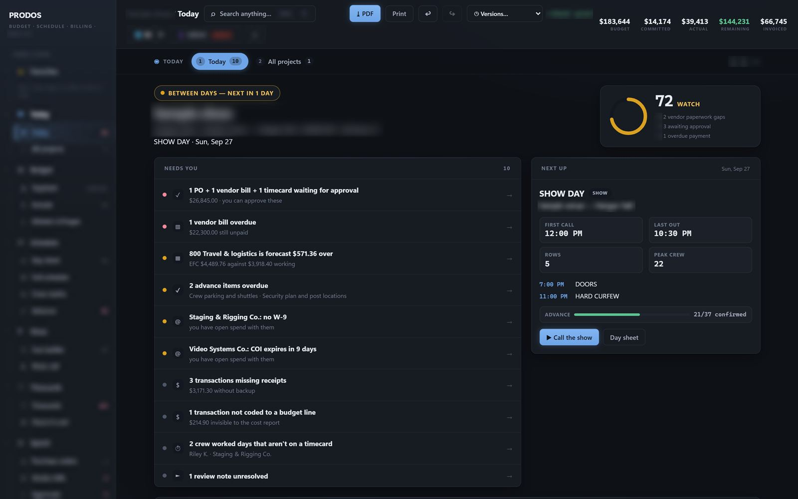
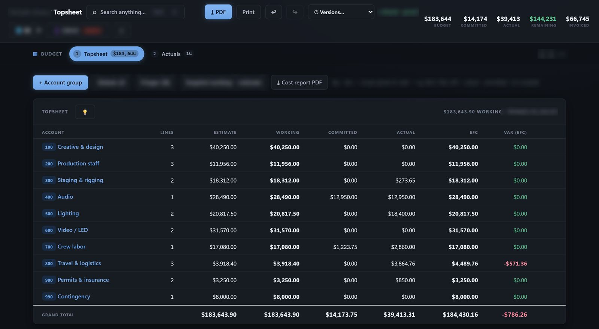
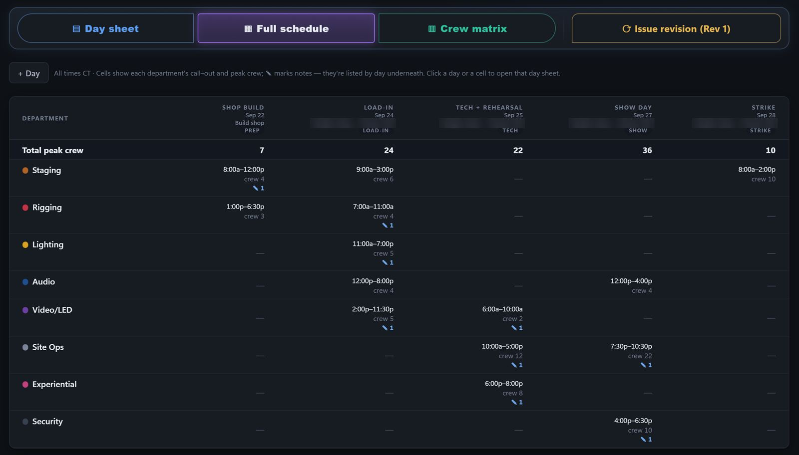
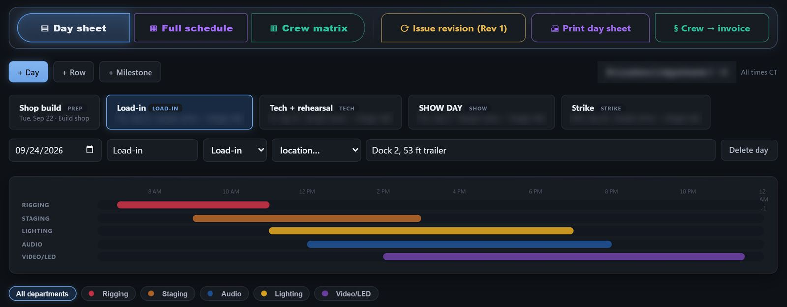
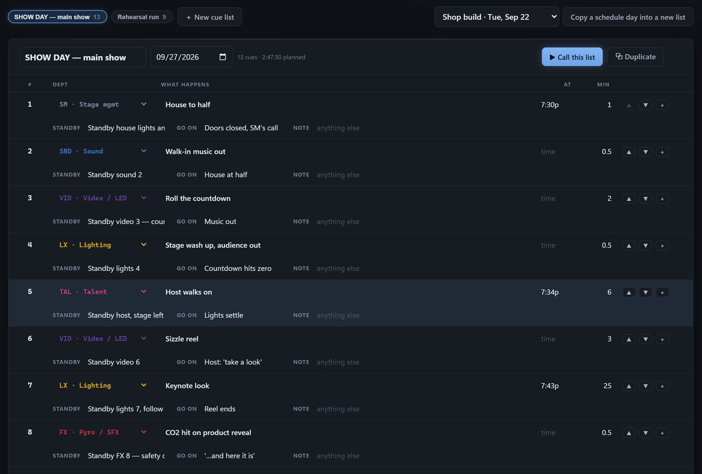
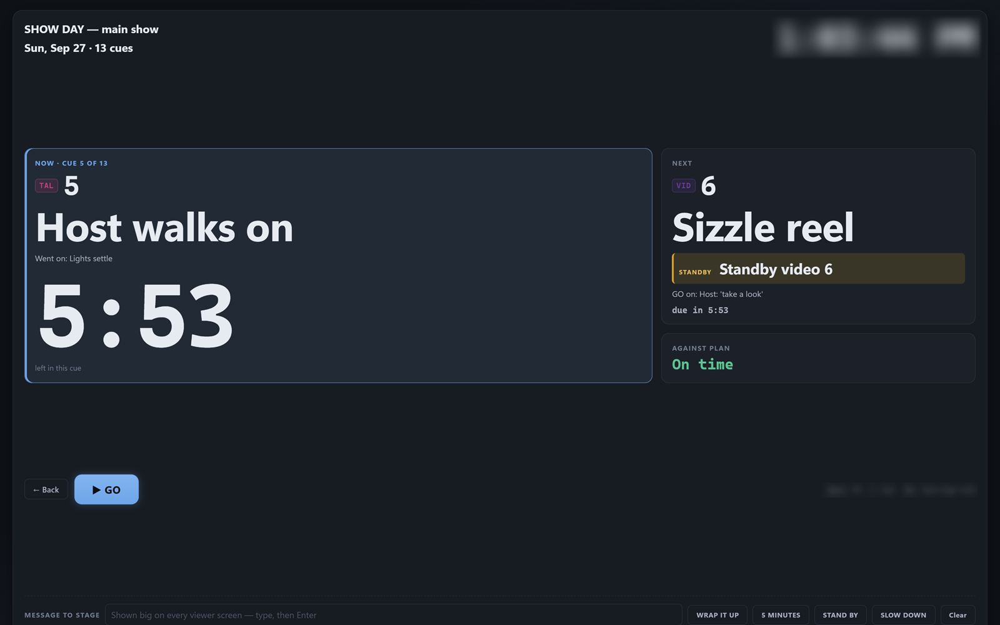
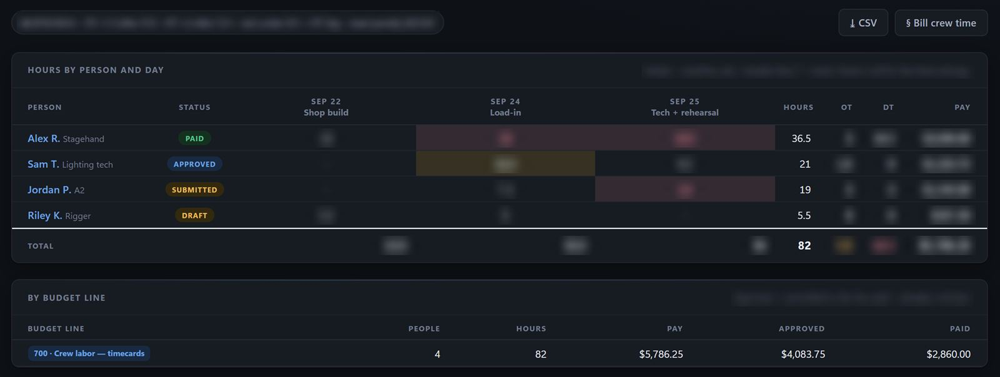
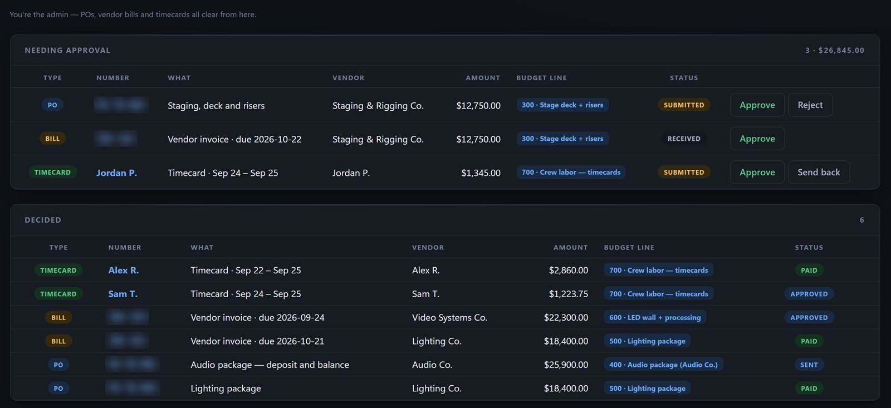
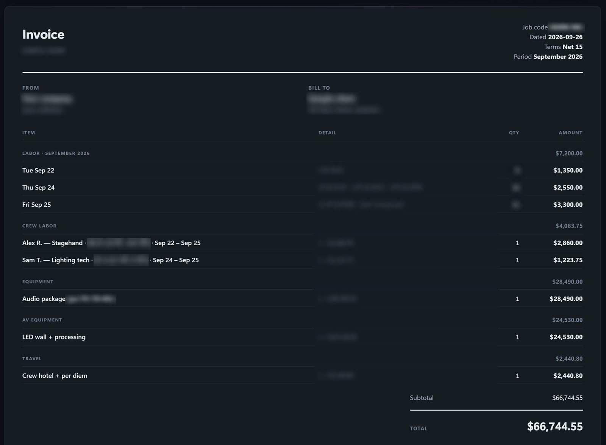
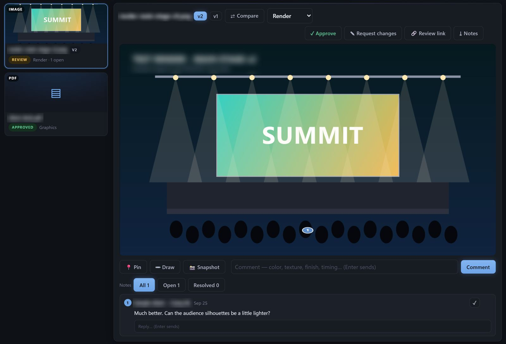

Production IP
We built our own operating system.
PRODOS, our Production Operating System, holds a live production's money, time and show call in one place, from the first estimate to the final invoice. We built it in-house to run the way we produce.
01 · What it runs
The whole production, in one system. From the first estimate to the last invoice.
Everything a production team touches between the kickoff and the wrap, kept in one place and in step.
Today
One screen that answers “what needs me?”: the project's health, what's waiting, the day on site, the money.
Budget
Every account from estimate to final: what's planned, what's committed, what's spent, and where it will land.
Schedule
Day sheets, the crew plan and call sheets from one plan, with conflicts caught and holds kept apart from bookings.
Show call
Cue lists built ahead of the day, then called live, with every GO on the clock and the stage following along.
Timecards
Every call, meal and wrap turned into approved, paid and billable crew time.
Advance
The venue questions (power, dock, rigging, credentials, catering) owned, dated and chased until they're answered.
Spend
Purchase orders and vendor bills approved in one queue, every cost landing on the budget line it belongs to.
Billing
Client invoices built from the budget or from approved crew time, with every payment recorded against them.
Files
Every version of every document and who it went to, plus frame-accurate review clients can join.
People
Crew and vendor contracts, NDAs, insurance and tax paperwork, with the gaps flagged before anyone is paid.
02 · A look inside
The screens, not the manual.
What the team sees on a show day. Enough to show how it feels to run a production on it; not enough to build one.










Every screen on this page shows a fictional sample show. Real productions stay private.
03 · On a show
What that means on a show.
-
One source of truth for money and time
The budget, the purchase orders, the vendor bills, crew time and the client invoices are one record. Approved time counts against the budget and paid costs land on it, so the number everyone is looking at is the same number.
-
Fewer surprises
Risks surface early and with their reasons: an account heading over, money running late, a schedule conflict, an advance still open close to show day. Each one opens straight to the fix.
-
Calls on time
Crew calls come from one plan and every call-sheet revision goes out from it. On the night, the show is called from a cue list the whole stage can follow, and afterwards planned sits beside what actually happened.
-
Clean billing
Invoices are built from what was budgeted and what was actually worked, change orders are on the record, and every payment is tracked against the invoice it pays.
Decisions in writing. Money and time on the record.
04 · Proprietary
Built in-house. Run our way.
PRODOS was built by Unconventional, for the way we produce. The screens on this page show a fictional sample show; the real thing, running a real production, is something we walk you through in person.
Quiet about how it works. Clear about what it does.
See it run
Want to see it run a show?
We'll walk you through it privately.
Start a conversationPrivate walkthroughs only.